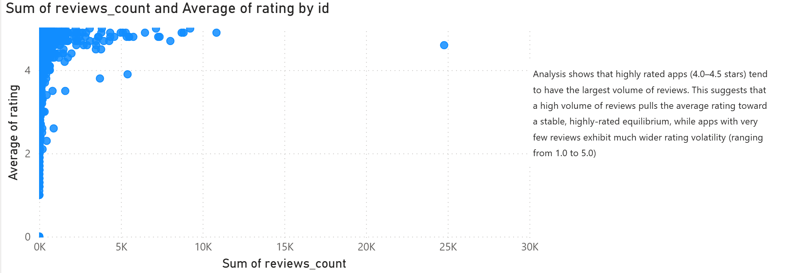

Executive Summary & Business Problem
The Shopify App Store hosts thousands of third-party applications competing for merchant installs. However, high overall ratings can be misleading if driven by low review volumes or artificial early-stage boosts.
Objective: Build an end-to-end Power BI reporting solution to model multi-table relational data, analyze rating stability against total review volume, and evaluate developer responsiveness as a key churn indicator.

Data Pipeline & Custom DAX Modeling
Data was ingested across multiple relational tables (Apps, Categories, Reviews, Developers). Key DAX measures were authored to calculate helpful review ratios and isolate high-volume verified apps from statistical anomalies:
// DAX: Helpful Review Ratio
HelpfulReviewRatio =
DIVIDE(
SUM('Reviews'[helpful_count]),
COUNT('Reviews'[review_id]),
0
)
// DAX: High-Volume Rating Stability Flag
RatingStabilityFlag =
IF(
[Total Reviews] >= 50 && [Average Rating] >= 4.5,
"Established Leader",
"Unverified / High Volatility"
)
Key Business Insights
- Review Count Thresholds: Rating volatility stabilizes significantly once an app surpasses 50 verified merchant reviews.
- Developer Response Times: Developers maintaining a developer response rate above 70% in review threads correlate directly with higher sustained rating retention over 12 months.
- Category Saturation: Marketing and Sales categories hold the highest app volume, while Store Design apps exhibit the highest average rating per customer install.